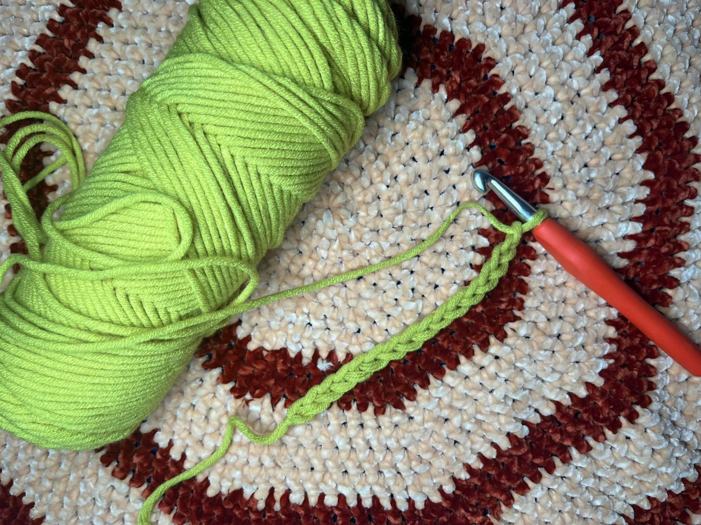

LEARN HOW TO CROCHET
How to Hold a Crochet Hook
Start by holding your crochet hook like a pencil, with your thumb and index finger squeezing the hook at the small compression in the center, known as a finger hold. For added comfort and control, slide your third finger up towards the tip of the hook. The hook should be turned slightly towards you, but not straight down or upward.

How to Make a Slip Knot for Crochet
To starts crocheting, you must first learn how to tie a slip knot onto a crochet hook. It is how you will thread the yarn onto the hook and begin crocheting. Twist and loop the yarn quickly onto the hook, then wrap it around the hook and pull it through the loop to tighten. Don't be concerned if it feels awkward at first; practice makes perfect.

Beginning crocheters typically begin by learning the chain stitch. The chain stitch is one of the most important basic stitches to learn because it serves as the foundation for the majority of crochet projects. In a pattern, the chain stitch is abbreviated "ch," or "chs" for the plural form. "ch" is usually followed by a number. ch 135 indicates that you should crochet 135 chain stitches.